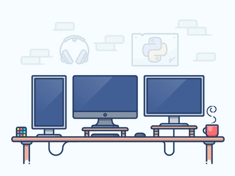
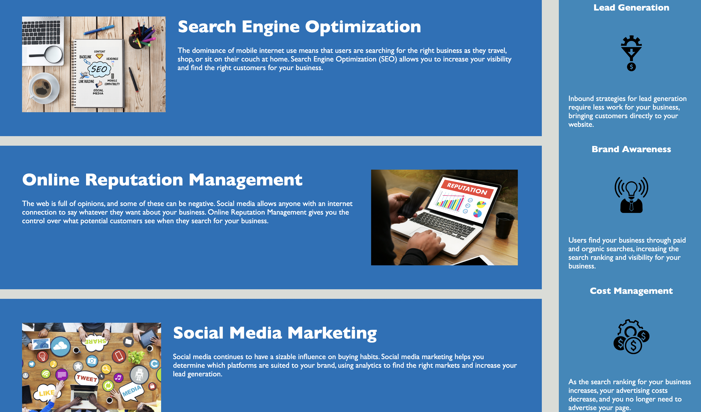

Hello, my name is Kanhai Raval.
I am a aspiring software developer, who is looking to learn and educate himself to becocme a full stack developer.
my goal is to create web & mobile application with equitable design, that solves issues and saves time for people in today's fast paced world.
My mission of 180 days of code is to become efficient and self-sufficient.
Outside of coding I enjoy analyzing financial markets, playing videos (PS5) and watching football. #GoManUtd


This was the first webpage group project I ever worked on. I got to learn many things on how to work as a team in web development. How to resolve branch conflicts and not overwrite each other works or how to use kanban and agile methodoly effectively. Learning about JavaScript and third party APIs was also a very education experience.
This was the first challenge for the bootcamp. It was a code refatcor where I had to try and
make the code more readable and add accesibility to all the images on the page.
It was a good exercise in trying to understand the code written by someone else.

This is a full stack website for a local coffee shop inspired by Larry David's spite store episode from the show Curb Your Enthusiasm.
The site is built on vanilla JavaScript, MySQL, Sequelize, ExpressJS, NodeJS, Tailwind nav bar and HTML-CSS.
This was an extremely educational process as I got to know just how much works goes into creating a full stack website.